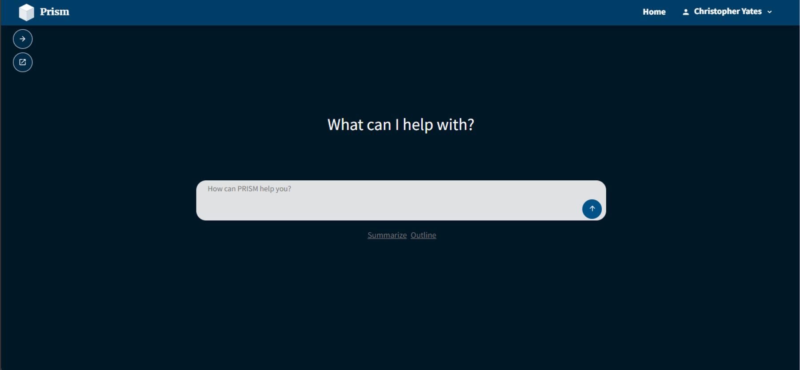

Shipped · case study in progress
Design Story · Flagship · AI experience design
LEDGER
Designing trust into an AI policy assistant available to 250,000 people across a federal department. As sole owner of the UI and UX, I turned a capable language model into something policy knowledge-workers could actually rely on — where every answer shows its sources, holds up to scrutiny, and survives a skeptical room of policy, legal, and executive stakeholders.

The brief
A federal department set out to put an AI assistant in front of hundreds of thousands of employees to help them navigate dense, high-stakes policy. The technology worked. The question was whether people would trust it enough to use it — and whether the experience could earn the confidence of the policy, legal, and executive stakeholders who had to stand behind every answer it gave.
What testing broke
The plan was to let people tell the system what to look at: panels for including documents, setting scope, shaping the environment. It’s the obvious design. It’s also the one nobody used. Twelve of twelve participants never opened the panels. When we pointed them out directly, two understood what they were for.
So we stopped asking people to configure the assistant and taught it to infer what they were after. That moves work out of the interface and into the system — which only works if the system shows what it decided and why. Transparency stopped being a feature and became the load-bearing requirement.
The same testing established that source transparency and response precision weren’t preferences. An answer without a traceable source wasn’t less useful to a policy knowledge-worker; it was unusable. That reframed the work from “design a chat UI” to “design a system people can verify.”
What changed
Findings drove the interaction model toward visible, checkable sourcing, and motivated architecture changes to support multi-turn conversation so users could refine an answer rather than re-ask for it.
We benchmarked against the SharePoint repository people were already using, and stacked the test against ourselves — participants looked for policies they already knew, on ground they were familiar with. Finding and verifying an answer still went about 20× faster.